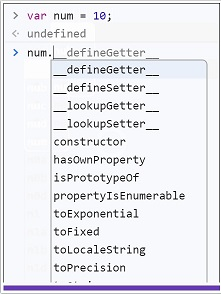
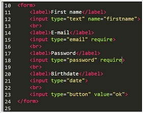

A változó, ahogy a neve is mutatja, egy olyan memória terület, ahol tetszőleges adatokat tárolhatunk.
Létrehozásának két fontos lépése van.
Deklaráció
Megadjuk a változó nevét, bizonyos nyelvekben a típusát is, de nem határozzuk meg, hogy milyen értéket tárolunk majd benne.
Azt hogy változót akarunk deklarálni, a var kulcsszóval jelezzük.
Definíció
Értéket adunk a változónknak, azt is mondhatjuk, hogy a memória területet feltöltjük adatokkal.

A javascriptben a primitív típusok kivételével minden objektum. Ezért is mondjuk, hogy a javascript objektumalapú nyelv.
A primitív típusok a következők:
Minden objektumnak lehetnek tulajdonságai (property) és metódusai (method).
typeof
A változók típusát a typeof beépített függvény segítségével kérhetjük le.
Ez csak az alapvető típusokat ismeri, a későbbiekben foglalkozunk a pontosabb típus meghatározással is.
A változó típusát a tulajdonságai és metódusai alapján is meg lehet határozni.
A html elemeket megjelenésük szerint két nagy csoportra oszthatjuk. Vannak a blokkszintű, és az inline elemek.
A blokkszintű elemek teljes szélességben betöltik a rendelkezésre álló helyet. Azaz mellettük már nem lehetnek
új elemek. Általában fejlécekhez, kiemelt tartalmakhoz használják őket. Tipikusan blokkszintű elem az összes címsor,
a bekezdések, űrlapok, táblázatok.
Az űrlapokon kérünk be adatokat a felhasználótól.
Ezek az adatok lehetnek email címek, jelszavak, hosszabb szövegek, bármi.